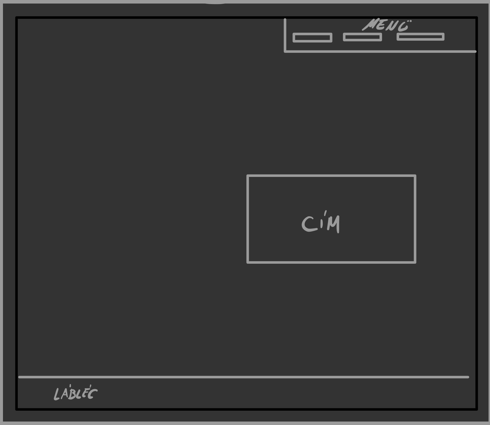
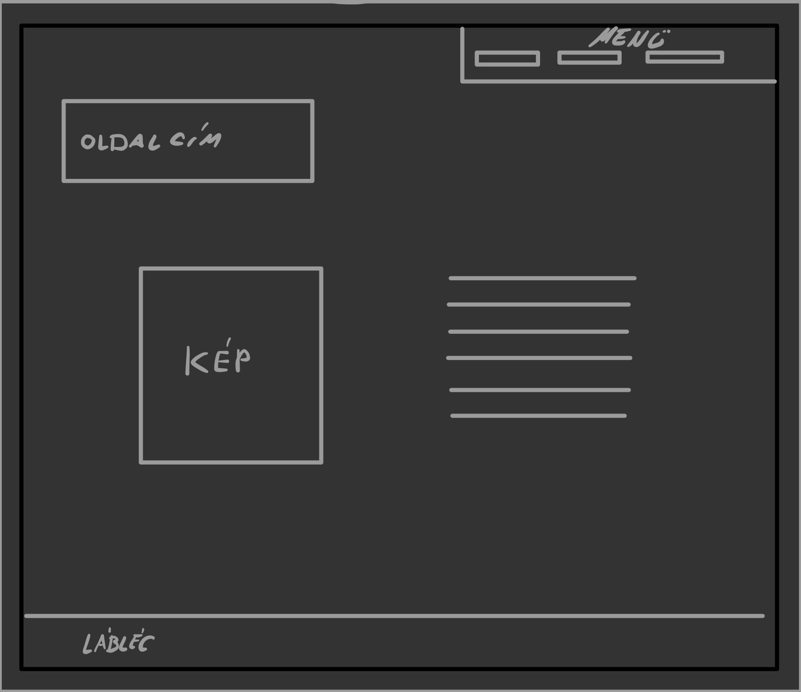
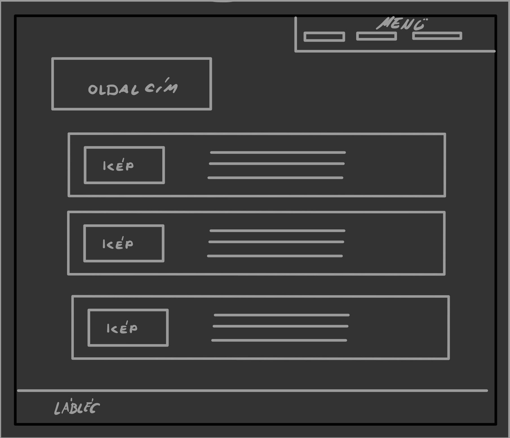
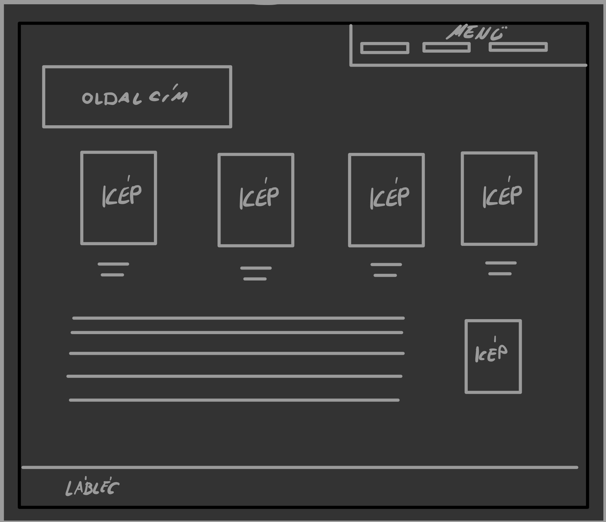

A weblap tervezésénél a fő szempont az volt, hogy egy átlátható, egységes és informatív oldal jöjjön létre.
Fontos volt, hogy ne csak tartalmilag, de grafikailag is egységesen nézzenek ki az oldalak, így egy letisztult hátteret rajzoltam, valamint a színeket is úgy választottam ki, hogy jól elkülönüljenek egymástól a jobb olvashatóságért, viszont mégis visszafogott maradjon az oldal.
A weboldal erdeti tervei itt láthatók:
   
A főoldal programozásánál úgy alakítottam ki az oldal felosztását (fejléc, tartalmi rész, lábléc), valamint a menü hivatkozásait, hogy azokat a többi oldalon is használni tudjam.
A bemutatkozási oldalon egy kicsit el kellett térnem az eredeti tervtől, hogy a szöveg, illetve a háttér ne takarják ki egymást. A képet meg a szöveget tartalmazó bekezdésnek a háttérszínmódosításával ki tudtam küszöbölni a hibát.
A projektek oldal tartalmi részének létrehozásakor grideket használtam, hogy a képeket, illetve szöveget világos háttérre tudjam tenni a jobb láthatóság éredkében. Itt is úgy írtam meg az elrendezés kódját, hogy a későbbiekben máshol is felhasználható legyen (pl.: dokumentáció), ezzel is növelve a honlap egységességét.
A projektek felsorolását úgy alakítottam ki, hogy az aktív projekt kategóriából pár módosítással át lehessen minősíteni korábbivá egy eredményt. Ehhez a tartalmi és formai elemek azonosak a két kategóriában, tehát a class-ok, illetve id-k úgy vannak beállítva, hogy könnyen módosíthatóak legyenek a felsorolás elemei.
Az eredeti tervben nem szerepelt a képek galériába rendezése, de a lenyitható fülek, illetve a vázlatos grafikák alkalmazásával egy sokkal letisztultabb felület jött létre.
A weblap létrehozása közben felmerülő kérdésekre interneten találtam válaszokat.
Összességében sikerült az eredeti tervnek megfelelően létrehozni a portfóliós oldalt.
A későbbiekre tekinte lehetséges fejlesztési irány lenne a mobil nézet optimalizálása, mivel az jelen állapotában még nem tökéletes.
Felhasznált weboldalak és programok:
w3schools.com
youtube.com
fonts.google.com
Sublime Text 3
Firefox DEVELOPER Browser